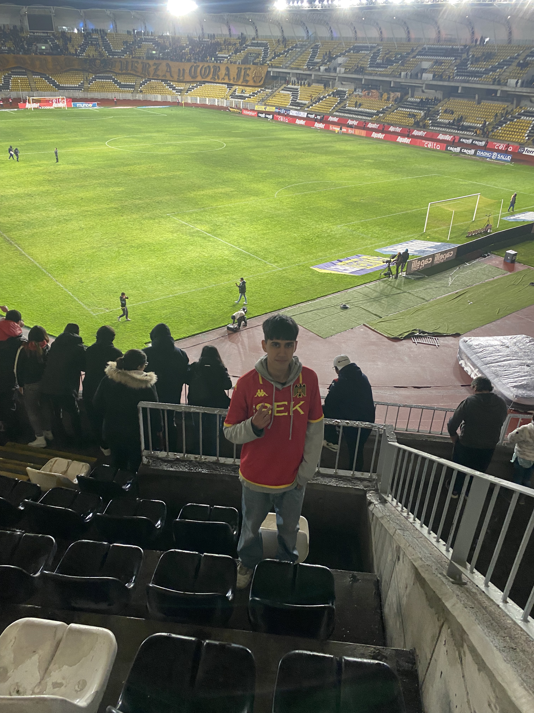

Matias Venegas
Periodista
Experiencia
- 2021 - actualidad: Panelista, editor de contenidos y editor de videos en "MDC"
- 2023 - 2023: Panelista y reportero en radio universitaria "Producto Nacional"
- 2021- actualidad: Editor de contenidos y redacción de escritos en "Reviewsdemrd"
Experiencia en terreno
- Cubrir partidos de futbol profesionales
- Eventos de música como los Premios Pulsar, la Feria Pulsar y ruedas de prensa
- Entrevistas con artistas emergentes
Habilidades de trabajo
- Buen trabajo en equipo
- Reporteo
- Creación de pautas y guiones para programas radiales
- Buen desplante frente a microfonos y camaras